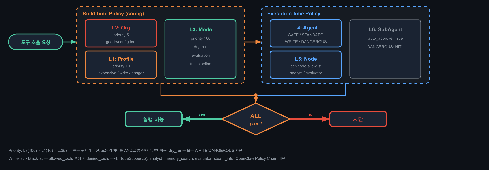

PART 5 — SAFETY
safe-first 검사하면 파이프 주입 통과 — Input Gating + Output Validation 이중 모델
Bash 3-Layer 실행 제어
L1 — Input Sanitization
명령 파싱 전 파이프 주입 패턴 차단. allow-list 방식으로 허용된 명령만 통과
L2 — Sandbox (macOS Seatbelt)
34-패턴 deny-list. 파일시스템/네트워크 접근을 OS 레벨에서 제한
L3 — Output Validation
실행 결과를 LLM에 반환 전 Secret Redaction 8-패턴으로 재검사
Secret Redaction 8-패턴
API key, JWT, password, token, secret, credential, private key, certificate — 정규식 기반 마스킹, LLM 컨텍스트에 유출 차단
PolicyChain 6-Layer

TRADE-OFF
safe-first 순서로 검사하면 파이프 주입이 Input Sanitization을 통과 — Output Validation을 독립 레이어로 분리하여 이중 차단
Dual Trust Model
Input Gating
LLM이 생성한 명령이 허용 리스트에 있는지 실행 전 검증. DANGEROUS 등급은 차단
Output Validation
도구 실행 결과를 LLM에 반환하기 전 재검사. Secret 누출 차단, 스키마 위반 필터링
왜 이중 모델인가
LLM이 도구 실행 도중 context에서 secret을 추출 가능. Input만 막으면 Output 경로로 우회 가능하므로 양방향 차단 필요
GEODE Portfolio V2 — Bash 3-Layer + Secret Redaction 8-Pattern + PolicyChain 6-Layer
25 / 31